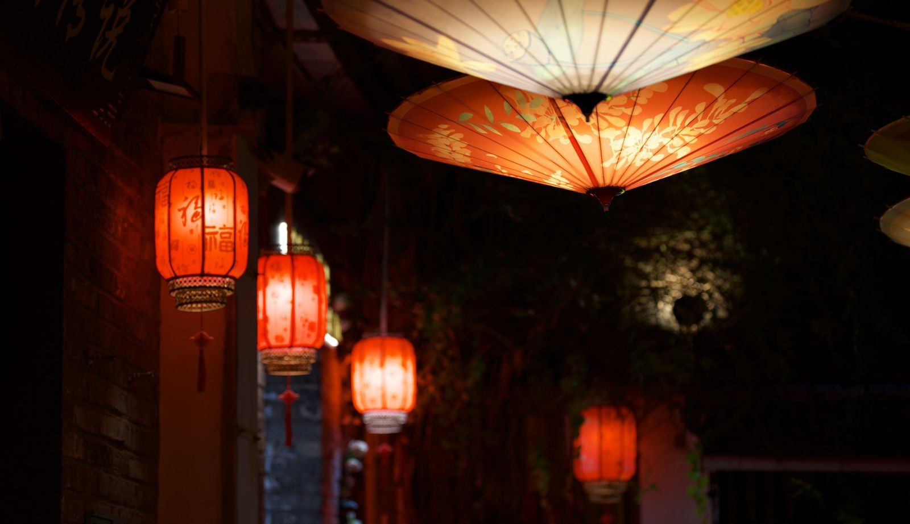
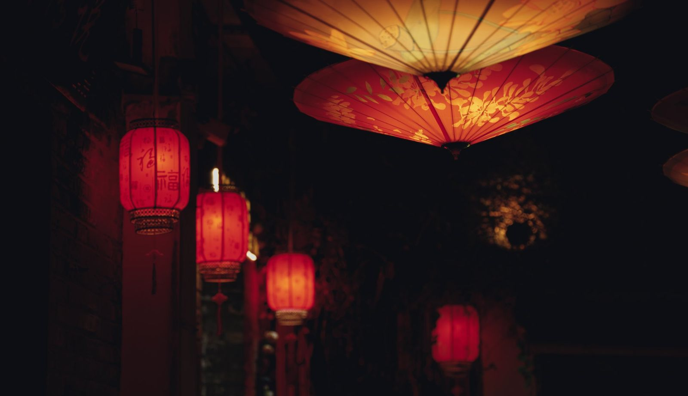
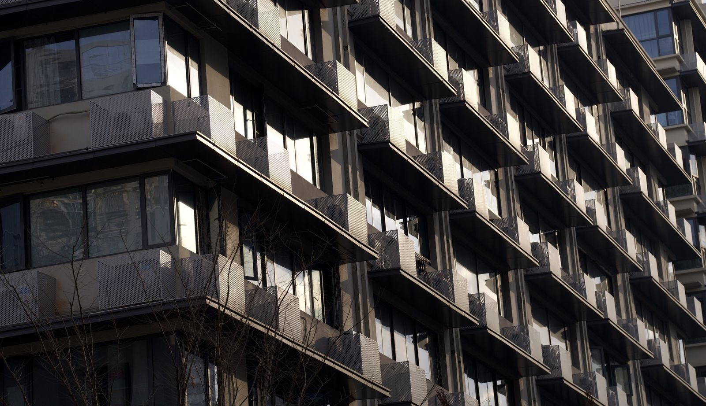
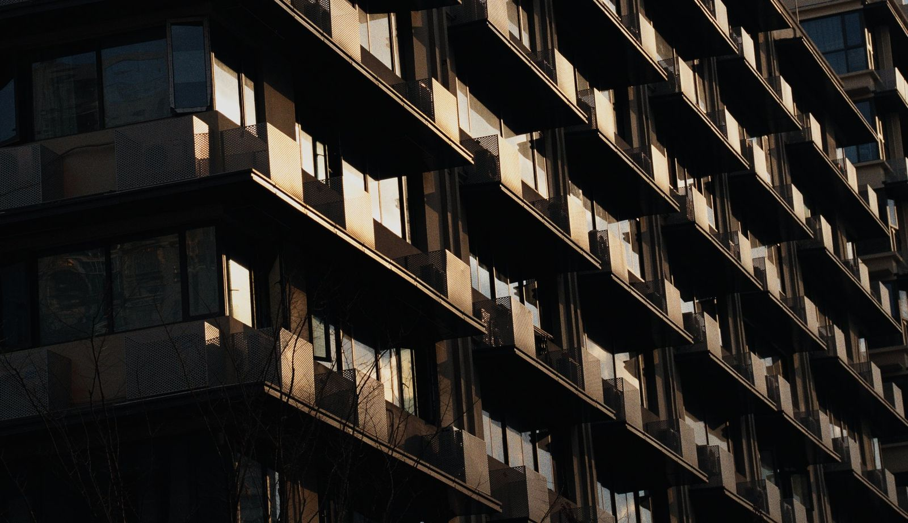
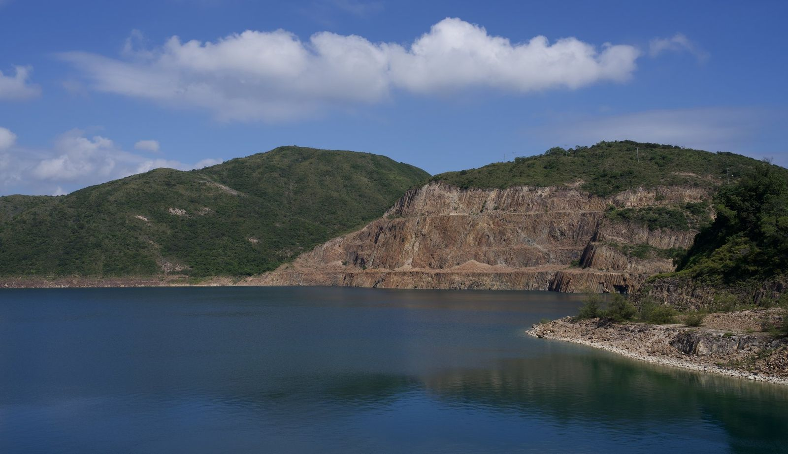
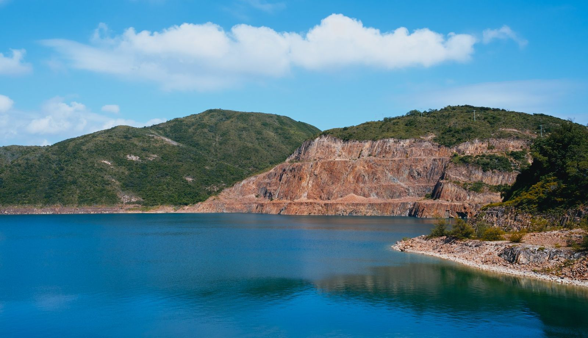
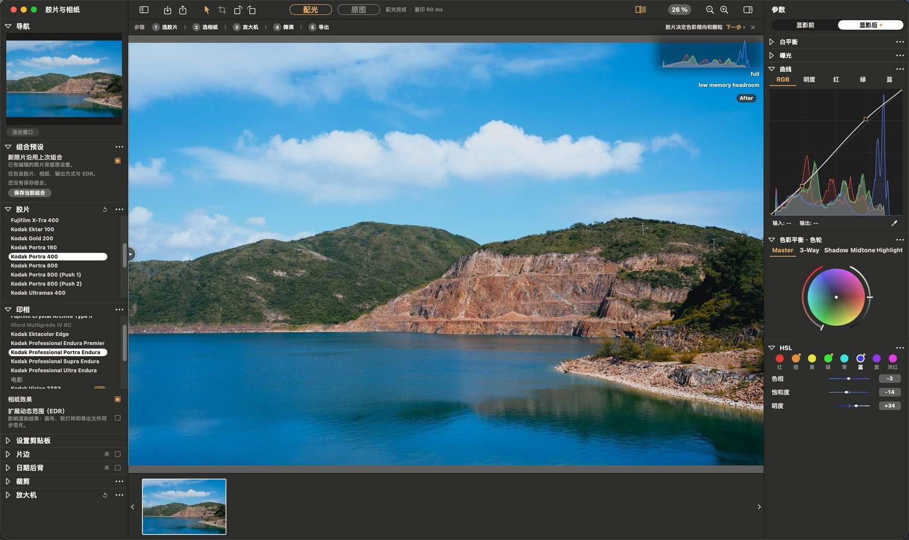
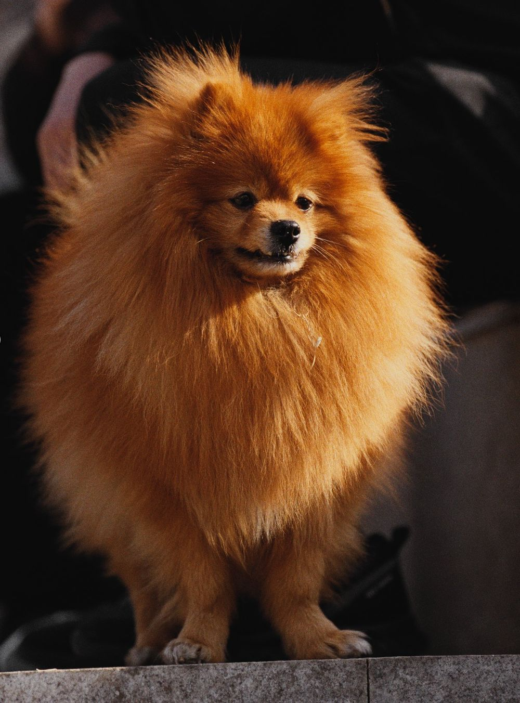
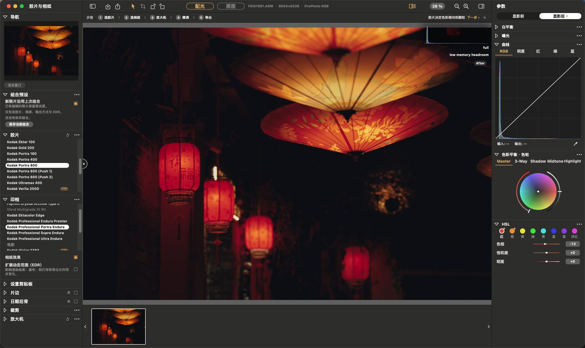

左边是相机 RAW 用苹果默认方式解码的原样，右边是在景到里选胶片、选相纸、调好后的成片。拖动中间的把手对比。
拍摄：索尼 α7R V。


几乎全黑的环境，只有灯笼在发光。高光留住纸伞的纹理，暗部沉下去，灯笼的红像真的在胶片上晕开。


把影子压暗，只留下斜阳扫过的那一道暖光。胶片的反差曲线让明暗之间不再发灰。


天更透，水更蓝，岩壁的红褐色被胶片染料重新“显影”出来，层次不靠饱和度硬拉。
滤镜只改像素的颜色。景到按光谱一步步算：光怎样落在胶片上，乳剂怎样显影，放大机怎样把负片印到相纸上，最后再扫描输出。全程在 Mac 的 GPU 上计算。
把照片还原成 81 个波长的光，按胶片三层乳剂的感光曲线曝光。
颗粒、光晕、DIR 层间抑制逐项模拟；胶片的感光与显影曲线来自厂商实测数据。
负片经放大机印到相纸上，「配光」自动测光、调滤色，像在暗房里一样。
扫描相纸成像，再用曲线、色轮、HSL 做最后的微调，导出成片。
左边选胶片和相纸，右边是显影后的曲线、色轮和 HSL。顶部五步引导：选胶片、选相纸、放大机、微调、导出。

最费时的光晕算一次就存下，拖曝光、颗粒时预览更快。
8 个颜色分别调色相、饱和度、明度，画布与导出一致。
点哪一步，侧栏就自动展开、定位、高亮。
记住你的搭配，新照片自动沿用，多套预设一键切换。
导出时带上你的签名，拖到想要的位置，批量按比例放置。
菜单、右键、状态栏、提示都是中文，一键旋转、栏目随你排。
全部为景到真实输出，作者手动调色。


使用问题、调色交流、合作，都可以找我。